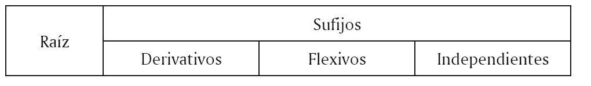

La familia quechua muestra una morfología esencialmente aglutinante y, salvo algún desarrollo muy particular, exclusivamente sufijadora (Adelaar y Muysken 2004). Una palabra quechua está formada necesariamente por una raíz con o sin sufijos, dependiendo del tipo de raíz del que se trate, donde los sufijos pueden clasificarse como derivativos, flexivos e independientes de acuerdo con una posición fija en la estructura de la palabra y con el tipo de relaciones que establecen (Cerrón–Palomino 2003). El siguiente cuadro , basado en Cerrón–Palomino (2003), muestra este orden lineal de los elementos de la palabra:

-
La variedad de quechua hablada en el Valle del Mantaro se conforma por tres variedades. Estos tres son:
- Huaylla - Huanca
- Huaycha - Huanca
- Shausha - Huanca
Estas variantes se hablan en los territorios correspondientes a las provincias de Huancayo, Concepción y Jauja, respectivamente.

Fonológicamente, las variedades Huaylla y Huaycha han cambiado el fonema protoquechua /q/ a una oclusiva glotal [ʔ], la misma que ha desaparecido por completo en posición inicial de palabra; en variedad jaujina, por el contrario, dicho protofonema se ha "suavizado", articulándosele como una fricativa glotal, es decir [h]
Proto - Huanca
/q/Huaylla y Huaycha
/q/ > [Ø ~ ʔ]Shausha
/q/ > [h ~ x]Glosa /qaya-y/ [aya-y] [haya-y] llamar /qiru/ [ilu] [hilu] tronco /qućha/ [ućha] [hućha] laguna /maqa-y/ [maʔa-y] [maha-y] golpear /wiqi/ [wiʔi] [wihi] lágrima /śhuqu-y/ [śhuʔu-y] [śhuhu-y] sorber /sinqa/ [sinʔa] [sinha] nariz - Entrevista a Cerrón Palomino por Municipalidad Provincial de Huancayo
- Ráez: Diccionario Huanca Quechua-Castellano
- Conferencia Cerrón Palomino - MINCUL parte 1
- Conferencia Cerrón Palomino - MINCUL parte 2
- Rodolfo Cerrón-Palomino: EL FRANCISCANO RAEZ PRIMER DECODIFICADOR DEL QUECHUA-WANKA